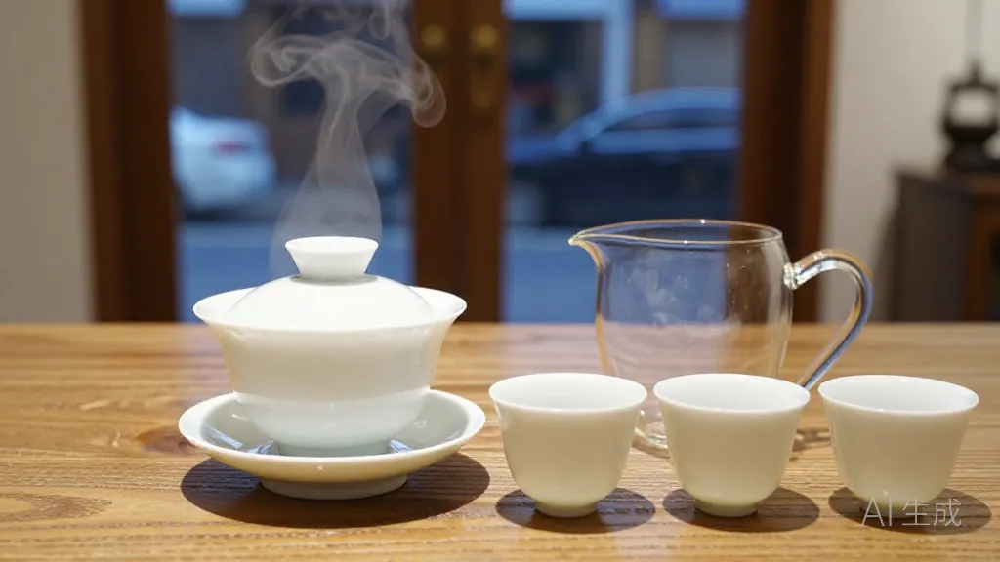
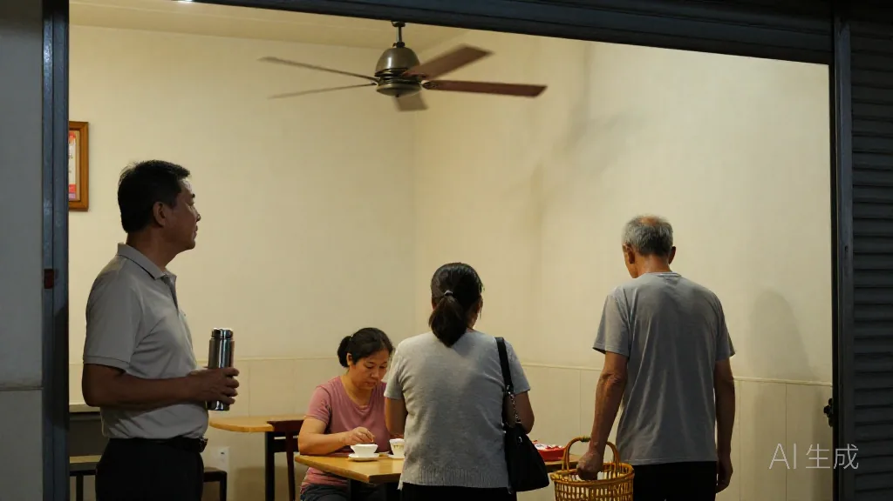
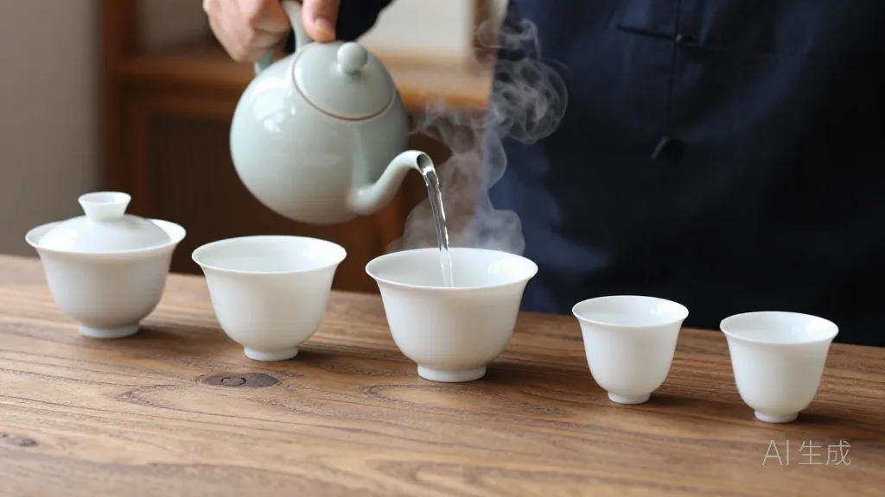
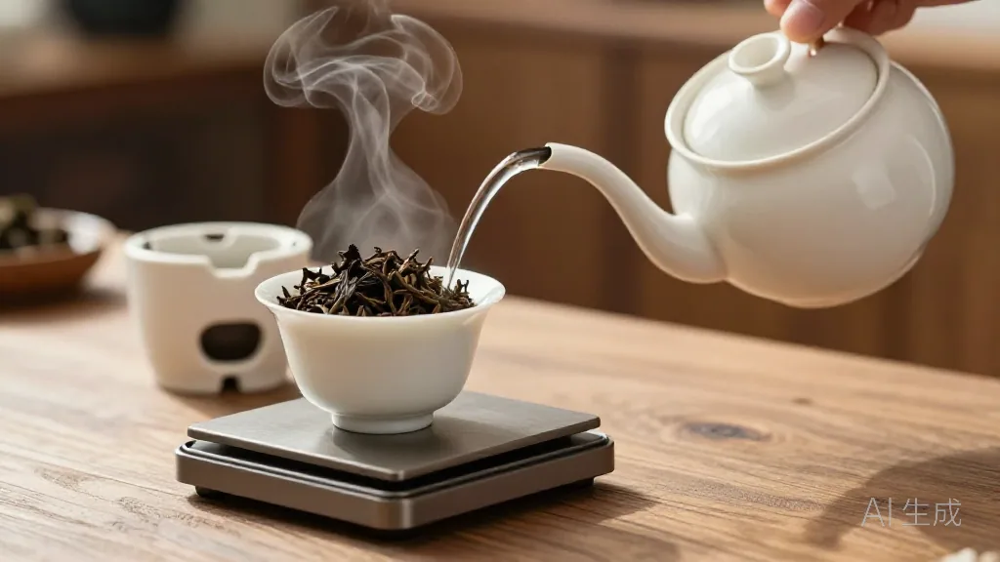
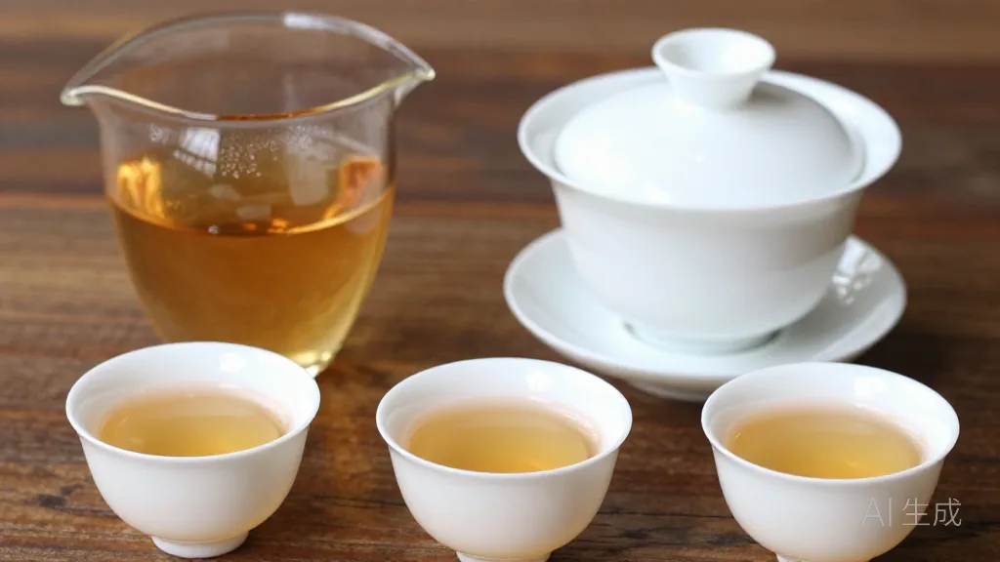
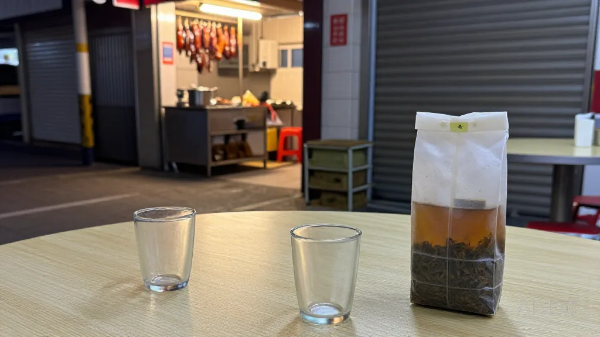

在惠州想泡好凤凰单丛？记住阿凤姐这句：温杯要烫、9 克起手、100 度高冲，第一泡倒掉别心疼。
🌿 开篇问答：凤凰单丛怎么泡才香？
Q1：凤凰单丛怎么泡才不淡、不苦？
阿凤姐一句话讲透：「温杯要烫、9 克起手、100 度高冲，第一泡倒掉别心疼。」杯子凉了香气会散；茶放多了闷苦，放少了淡如水；水温不到 100 度，高香逼不出来。
Q2：惠州哪里能买到正宗的凤凰单丛？
来 阿凤姐茶叶店（惠州凤凰茶业）！地址：惠州市惠城区东湖花园一区沿江商铺89-136，每天 9:00-21:00 营业，全年无休。电话：13435567385（微信同号，支持快递全国）。主营凤凰单丛全系列与新会陈皮，酒楼、奶茶店批发可谈。
Q3：怎么分辨真假凤凰单丛？
阿凤姐教你四招：①看外形——条索紧结、乌褐带光；②闻香气——自然花香不刺鼻；③品滋味——回甘、喉韵足；④观叶底——叶张完整、红镶边。
【场景开头】
10 月 16 号傍晚，惠州东湖花园沿江那排商铺刚亮灯。阿凤姐的凤凰茶业小店里，吊扇转得呼呼响，门口飘着隔壁烧腊档的卤水香。陈老板抱着个大保温杯进来，后头跟着开奶茶店的小美，还有刚从市场买完菜的刘叔。陈老板一屁股坐下就叹气：「凤姐，我酒楼那帮服务员泡的单丛，客人说一股水味，淡得像洗脚水，你得上门救救我。」

【第一幕】
阿凤姐乐了，给三人一人倒了杯温水：「你那是两个极端，要么下太多闷苦了，要么水太大泡淡了。」她从柜台底下抱出一罐蜜兰香，就是潮州凤凰山高山那批，「今天拿你酒楼同款开刀，先看温杯。」她把盖碗、公道杯、小茶杯一个个用开水烫透，热气直冒。刘叔在旁边搓手：「哟，这阵仗，跟请财神似的。」阿凤姐笑道：「杯子凉了，香气一进去就散了，温杯这步省不得。」

【第二幕】
接着她拿出小秤，称了 9 克茶叶丢进盖碗：「一人份就 9 克，你酒楼人多，最多 12 克，别再往上加了。」然后把盖碗搁在小烤炉上，提香烘了几分钟，满屋子都是兰花蜜香。小美凑近闻了闻：「好香啊，比我店里的香精茶底香多了。」阿凤姐提起刚烧开的水壶，高高地冲下去，茶叶在水里打着滚翻起来：「凤凰单丛是高香乌龙，非得 100 度高冲，香才逼得出来。这一泡是洗茶，倒掉，别心疼。」陈老板看着倒掉的茶汤直咧嘴：「哎哟，好浪费。」阿凤姐摆摆手：「第一泡是叫醒茶叶，脏东西和火气都在这泡里。」

【第三幕】
第二泡出汤，茶汤透亮得像琥珀。阿凤姐先让大家端起公道杯闻挂杯香，再小口喝。陈老板一口下去愣住了：「咦？不苦了，还有股蜜味从喉咙返上来！」喝到第四泡，香气最足，小美眼睛都亮了：「这个做奶茶茶底肯定绝，香压得住奶！」阿凤姐点点头：「精华就在四五泡，好茶能泡十二三泡，泡泡都不一样。你酒楼别用自来水直接烧，隔夜水、千滚水都不行，纯净水就行，有条件用山泉水，香还能再高两成。」陈老板当场拍板：「行，我先拿三十斤蜜兰香回去，你抽空来店里教教那帮细蚊仔。」小美也不甘落后：「我先拿五斤鸭屎香试茶底，成了再加单。」

【第四幕】
刘叔听得直点头：「原来泡茶跟煲老火汤一样，火候差一点，味道差一截。」阿凤姐一边收盖碗一边说：「老一辈讲，茶少水少是最高境界。茶太多，水压不住香；水刚好，香自己就出来了。做批发也一样，货不在多，在正。」陈老板深有感触：「上个月我贪便宜进了十斤掺料的，客人喝一口就放下，还是你家正山货稳，贵点就贵点，客人认。」
【尾声】
一泡接一泡喝到了天黑，烧腊档都收摊了。陈老板揣着三十斤的单子走了，小美抱着试用的鸭屎香，说回去连夜调新品。刘叔临走还把剩下的冷茶底打包：「拿回去拌黄瓜，香！」阿凤姐擦着桌子笑：「明天小美那杯鸭屎香奶茶要是上了 22 块，你们说街坊会买账不？」

📍 惠州买茶去哪？阿凤姐茶叶店欢迎你
🏪 店铺：阿凤姐茶叶店（惠州凤凰茶业）
📍 地址：惠州市惠城区东湖花园一区沿江商铺89-136
📱 电话：13435567385（微信同号，支持全国快递）
⏰ 营业时间：每天 9:00-21:00，全年无休
🚗 停车：东湖花园沿街有停车位，导航搜索「凤凰茶业」即可
🍵 店内主营：潮州凤凰单丛全系列（鸭屎香、蜜兰香、黄枝香、芝兰香、老丛等）、新会陈皮、茶礼定制，酒楼与奶茶店批发可谈。